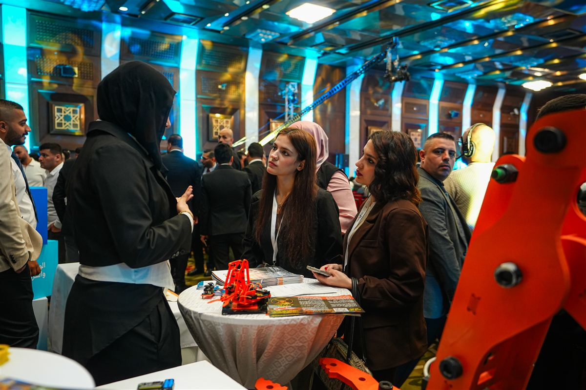
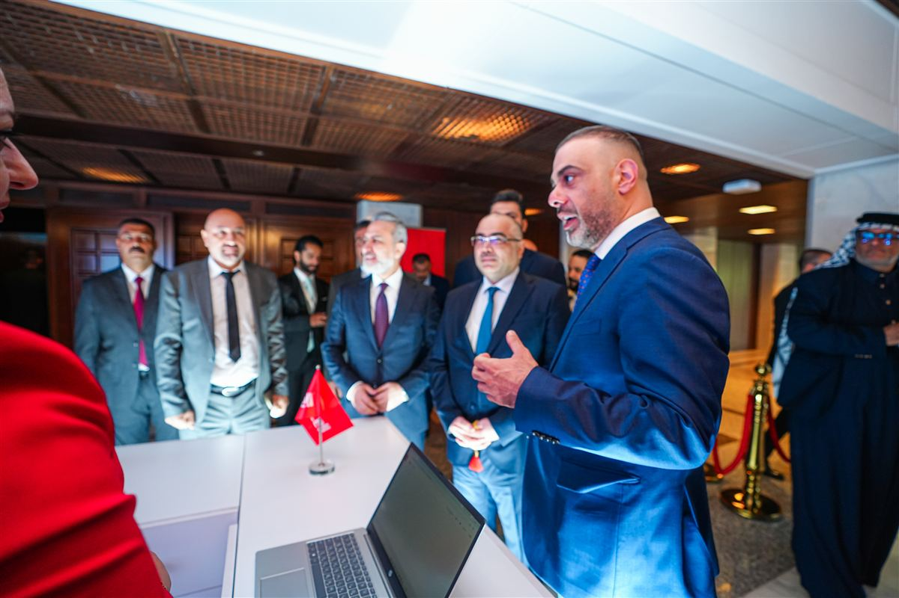
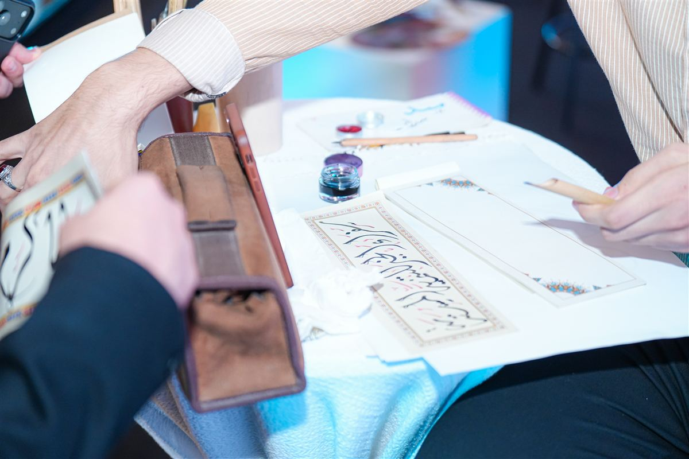
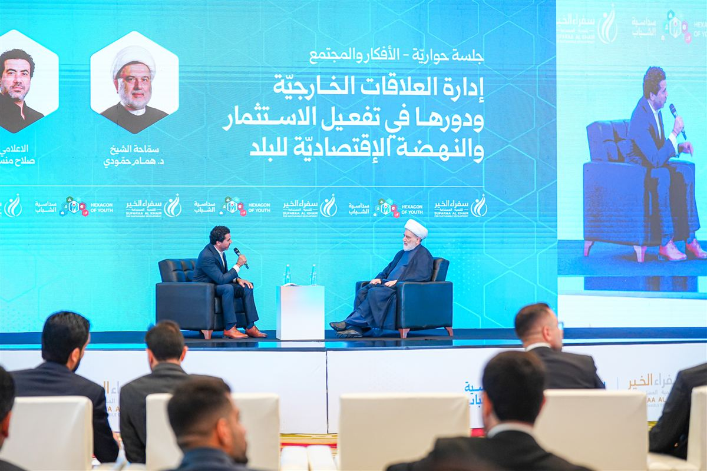
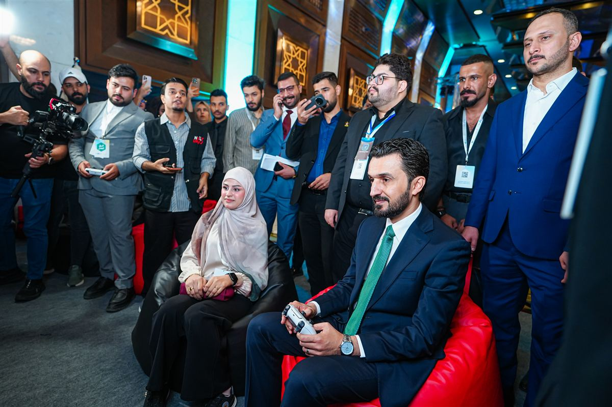
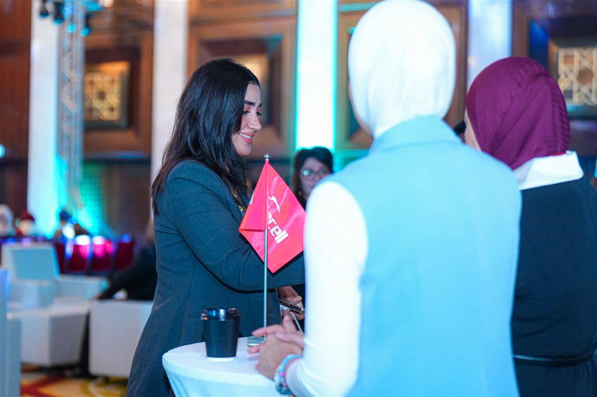
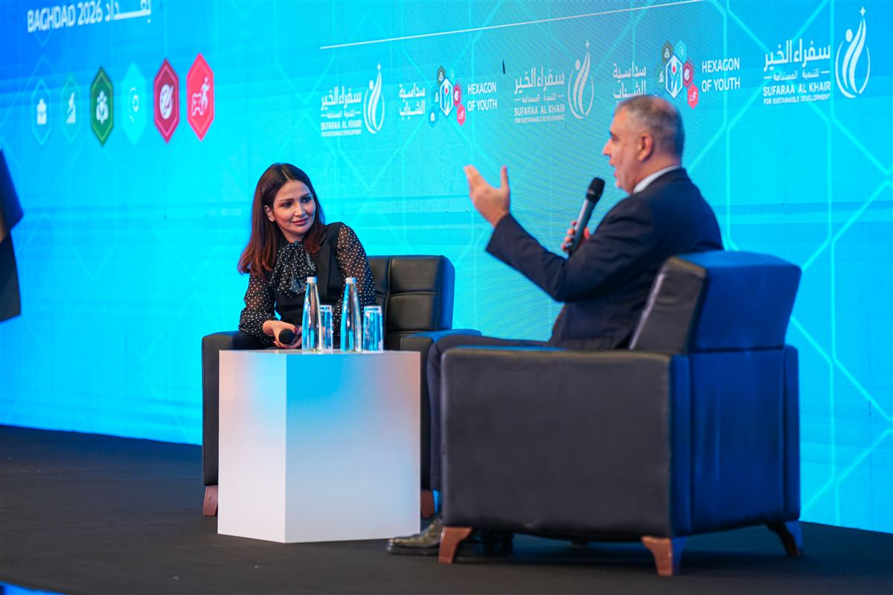
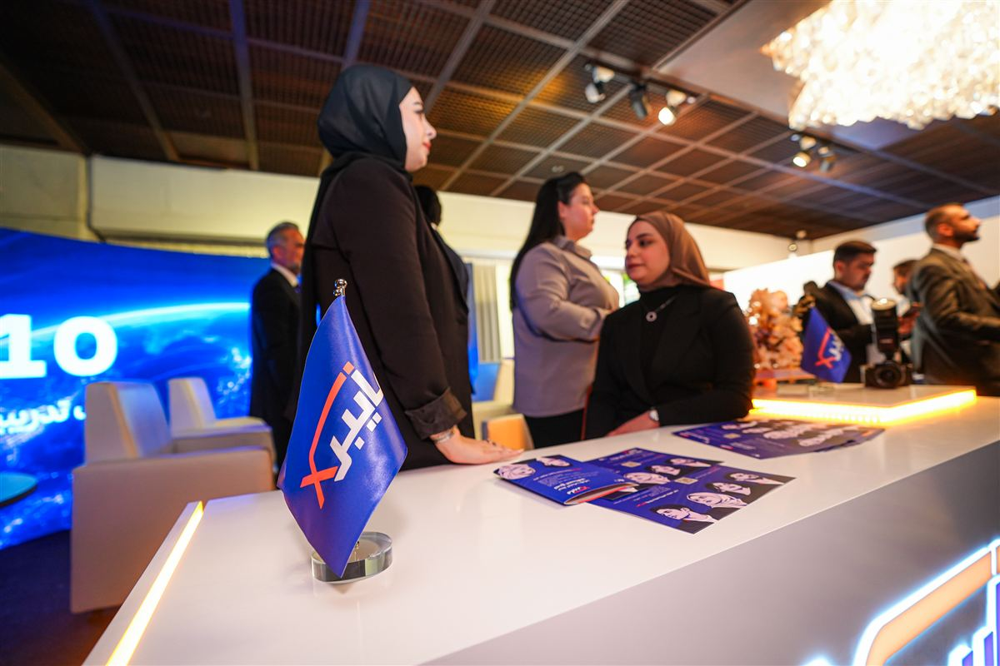

ستة أضلاع
خمسة في الجناح الرئيسي بقاعة الزوراء، والسادس على المسرح. لكلّ ضلع منطقة يديرها شركاؤه وميسّر من الشباب، وبقي الجناح مفتوحاً طوال اليومين.
اختر ضلعاً
الوظائف والفرص
CAREER & JOBSأكثر المناطق شركاءَ: ثماني جهات التقت بالباحثين عن عمل وجهاً لوجه، عبر ركن لمراجعة السير الذاتية عمل طوال اليومين، ومقابلات عمل مباشرة، وفرص تدريب وتوظيف قدّمتها كي.
المشاركون: رؤية الإبداع · بناة الديار · بركات الكوثر · أكد تك · آسياسيل · IVI · T964 · كي
+١٠٠ سيرة ذاتية روجعتالتدريب والمهارات
SKILLS & TRAININGمنطقة التدريب والاستشارات، ومنها انطلق المشاركون إلى القاعتين الجنوبية والشمالية: فيها نقطة التسجيل في الورش الاثنتي عشرة، ومدرّبون يقدّمون الاستشارة للشباب مباشرةً.
المشاركون: بيت الحكمة BHTC · الميادين بلس · T964
١٢ ورشة · ٣٦٠ مقعداًالابتكار وريادة الأعمال
INNOVATION & STARTUPSمساحة لعرض المشاريع الناشئة والتعريف بالشركات وربطها بالمستثمرين. وقدّم شركاؤها ورشتين: واحدة عن إنشاء شركة ناشئة تكنولوجية في العراق، وأخرى عن دور الشباب والتكنولوجيا في الأمن الغذائي.
المشاركون: السوق الرقمي SDMICT · مخيّم العلوم · الجبل الزراعي · T964
ورشتان من شركاء المنطقةالفنون والإبداع
ARTS & CREATIVITYرسم الفنانان بورتريهات بالقلم للحضور في الجناح، ثم انتقل الفن إلى المسرح الرئيسي بلوحة حيّة رُسمت أمام الجمهور باسم السداسية.
المشاركون: الفنان ماهر الدمشقي · الفنان رامي علي
لوحة حيّة على المسرحالرياضة والألعاب الإلكترونية
SPORTS & ESPORTSمنصات لعب مفتوحة للجميع طوال اليومين، وبطولة إلكترونية جرت تصفياتها في اليوم الأول ونهائيّها يوم السبت.
المشاركون: المستوى التالي NextLevel · كولدن
+٨٠ مشاركاً في البطولةالأفكار والمجتمع
IDEAS & COMMUNITYالضلع السادس كان مكانه المسرح: جلسات حوارية وبودكاست تفاعلي مع وزراء ومسؤولين وخبراء، إلى جانب الفن الحيّ وكلمة الشباب.
على المسرح الرئيسي: جلسات حوارية · بودكاست تفاعلي · كلمة شباب السداسية · رسم حيّ
٤ ضيوف في البودكاست التفاعلي
جولة بين أجنحة الشركات

مشاركون في إحدى الورش
زوّار أمام أحد المشاريع المعروضة

من ضلع الفنون والإبداع

منصات اللعب في ضلع الرياضة والألعاب الإلكترونية

جلسة حوارية مع سماحة الشيخ الدكتور همام حمودي
الجناح بالأرقام

كان الجناح محطّة جولة كبار الضيوف يوم الافتتاح (١٢:٣٥ – ١٣:٠٠) بعد كلمة نائب رئيس مجلس الوزراء.
رحلة الزائر

منطقة الاستقبال
التسجيل وأجنحة الرعاة الأربعة.

الجناح الرئيسي
خمس مناطق في قاعة الزوراء، منطقة لكل ضلع.

قاعتا الورش
القاعتان الجنوبية والشمالية.

المسرح الرئيسي
الحوار والبودكاست والفن الحيّ.
أجنحة الرعاة في الاستقبال
أول ما يستقبل الزائر قبل دخول قاعة الزوراء: أربعة أجنحة للرعاة في منطقة الاستقبال.
- فايبر إكس FiberX
- T964
- آسياسيل
- IVI
